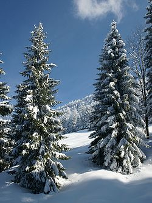

Bosque sub tropical o Coníferas
Los bosques subtropicales de coniferas o también bosques de pino o bosque pinar, constituyen un bioma forestal terrestre que se presenta en zonas altas y bajas de clima subtropical semi-húmedo con una estación seca larga y escasas precipitaciones donde la vegetación predominante son los bosques de pino y mixtos (coníferas y frondosas).
Los ecosistemas que componen este bioma son bosques densos acompañados de un sotobosque de hongos, helechos, arbustos y árboles pequeños. Destacan las aves y mariposas migratorias. Donde el bosque es más seco hay matorral espino y plantas suculentas.
Los bosques pinares de Honduras cubren un 22 ,3% de la superficie total del país. El 52 % se encuentran en la zona central, el 19% en la zona este del país y el 14% se encuentra en la zona oeste del país.
